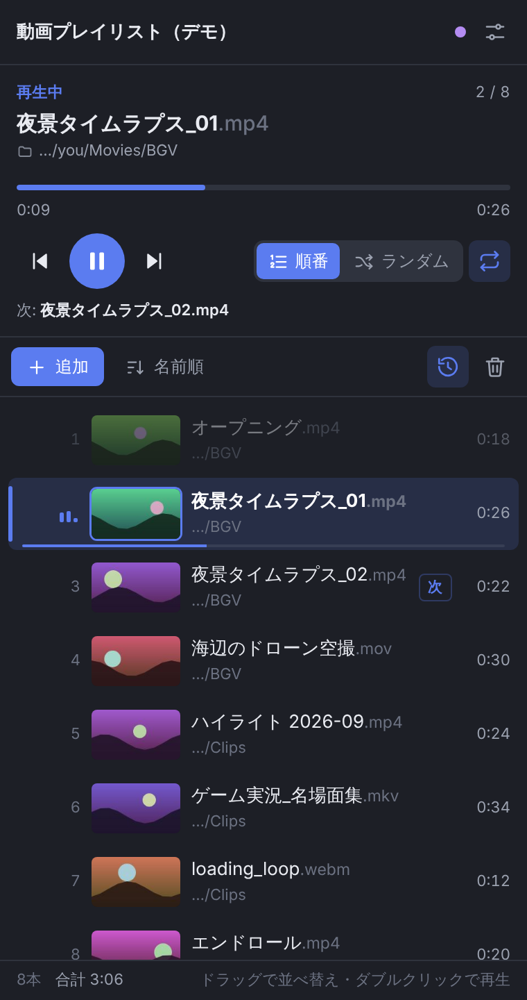

OBS で、動画を
流しっぱなしに。
登録した動画を、順番またはランダムで連続再生し続けます。専用のドックで、再生中の動画とこれから流れる動画がひと目でわかり、ドラッグで再生順を入れ替えられます。

動画で見る、動画プレイリスト
流しっぱなしに必要なものを、ひとつに
待機画面の BGV、休憩中のループ映像、ハイライト集の連続再生などに。
順番／ランダムで連続再生
最後まで行ったら最初から繰り返し。ランダムは一巡ごとに再シャッフルし、同じ動画が続かないようにします。
ドラッグで並べ替え
再生中・次の動画・再生済みが縦に並ぶ専用ドック。行をドラッグするだけで再生順を変えられます。
フォルダごと追加
ファイルを1本ずつでも、フォルダを選んでまとめてでも。サブフォルダの中も読み込めます。
サムネイルと再生時間
リストの各行にサムネイルと長さを表示。プレイリスト全体の合計時間もわかります。
再起動しても続きから
プレイリストと再生位置はシーンコレクションに保存。OBS を起動し直しても続きから再生します。
ホットキー対応
次へ／前へ／シャッフル／順番・ランダム切替を OBS のホットキーに割り当て可能。Stream Deck からも操作できます。
導入は3ステップ
Python などの追加インストールは不要です。設定は最初の1回だけ。
-
ダウンロードして展開する
- このページの 「無料でダウンロード」 から zip をダウンロードして展開します
- 展開したフォルダを好きな場所に置きます。中の
obs-video-playlist.luaとvideo-playlist-dock.htmlは 同じフォルダに置いたまま 使ってください
置き場所はあとから動かさないでください。 フォルダを移動するとドックの URL が変わり、登録し直しが必要になります。 -
スクリプトを読み込んで、プレイリストを作る
- OBS のメニュー ツール → スクリプト を開き、左下の ＋ で
obs-video-playlist.luaを選びます - （任意）右側の 「最初に入れる動画フォルダ」 で、流したい動画の入ったフォルダを選びます
- 「現在のシーンに『動画プレイリスト』を作成」 を押すと、画面いっぱいのメディアソースが作られ、再生が始まります
スクリプト画面の一番上に「セットアップ状況」が出るので、残りの手順はそこで確認できます（表示を更新するときは「再チェック」）。
- OBS のメニュー ツール → スクリプト を開き、左下の ＋ で
-
ドックを追加する
- ツール → WebSocket サーバー設定 で 「WebSocket サーバーを有効にする」 にチェックします
- ツール → スクリプト の右側にある ドックURL の「表示」を押してコピーします
- ドック → カスタムブラウザドック（OBS 28〜29 は 表示 → ドック → カスタムブラウザドック）を開き、名前に「動画プレイリスト」、URL に貼り付けて 適用 します
ドックURLには WebSocket のパスワードが入っています。 配信や画面共有に映さないよう注意してください。
ドックでできること
動画の追加は、ドックの 「追加」→「ファイル選択で追加…」 から。開いた画面の「ファイル／フォルダを追加」の ＋ でファイルやフォルダを選びます。
| やりたいこと | 操作 |
|---|---|
| 並べ替え | 行をドラッグ（キーボードなら行を選んで Alt + ↑ / ↓） |
| 今すぐ再生 | 行をダブルクリック、または行の ▶ |
| 次に再生する | 行にマウスを乗せて出るアイコン |
| 再生／一時停止 | 大きい丸ボタン、または Space |
| シーク | プログレスバーをクリック／ドラッグ |
| 順番／ランダム | 「順番」「ランダム」を切り替え。シャッフル後の順番もリストに並びます |
| 繰り返し | 右端のループアイコン（オフにすると最後の動画で止まります） |
| 再生済みを隠す | 時計アイコン |
| 削除 | 行の ×（全部消すときはゴミ箱を2回） |
よくある質問
どんな形式の動画が使えますか？
mp4 / m4v / mov / mkv / webm / avi / flv / wmv / mpg / mpeg / ts / mts / m2ts / ogv / 3gp / mxf / gif に対応しています。開けないファイルは自動でスキップされます。
ドックに「OBS に接続できません」と出ます
ツール → WebSocket サーバー設定 で WebSocket サーバーが有効になっているか、ポート番号が合っているかを確認してください。パスワードを聞かれたときは、同じ画面の「接続情報を表示」で確認して入力します。
新しいバージョンに更新するには？
新しい zip を展開し、中の obs-video-playlist.lua と video-playlist-dock.html を今使っているフォルダに上書きします。そのあと ツール → スクリプト で「スクリプトを再読み込み」（↻）を押し、ドックを右クリック →「再読み込み」してください。新しいバージョンが出るとドックの上部でお知らせします。
シーンを表示していないときも再生は進みますか？
はい。スクリプトの「作成」ボタンで作ったソースは、テレビのチャンネルのように裏で再生が進みます。表示したときに頭から再生したい場合は、メディアソースのプロパティで「ソースがアクティブになったときに再生を再開する」をオンにしてください。
うまく動かないときは？
ツール → スクリプト で obs-video-playlist.lua が 1つだけ 読み込まれているか確認し、「スクリプトを再読み込み」を押してください。ほかの症状は README の「うまく動かないとき」 にまとめています。